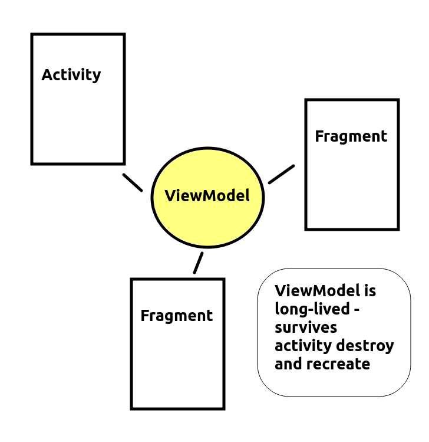

Mobile Application Development - Topic 10
ViewModel and LiveData
Today we will look at the Android components ViewModel and LiveData and how they can lead to cleaner, more maintainable code and easier synchronisation of the underlying data of the application with the UI.
The concept of LiveData
Let's consider an extended version of our Room application from week 7, which lists all the songs currently in the database in a TextView underneath the EditTexts and buttons. It would be nice if the UI could automatically update whenever the underlying data in the database changes. This is shown below:

The user can add songs via the UI. Also, the list of songs in the TextView below the form updates when a new song is added (you can see that we've just added Oasis and the song has appeared on the TextView). We could do this manually if we wanted, but it's much easier to automatically update the list of songs using the concept of LiveData instead. Using LiveData for our data allows us to auto-update the UI whenever it changes. It can be observed by another part of the application. We observe LiveData in this way with an Observer object. The Observer runs a specified lambda function each time the data changes; this lambda receives the updated data as a parameter. So, in the Observer's lambda, we can take the updated data and use it to update the UI appropriately.
Example
It's easy to update a DAO to return LiveData.We simply update our DAO so that the search methods return LiveData of the appropriate type. So, in a student records app, we might change:
@Query("SELECT * FROM students")
fun getAllStudents(): List<Student>
to:
@Query("SELECT * FROM students")
fun getAllStudents(): LiveData<List<Student>>
In other words, the getAllStudents() method is now returning LiveData consisting of a list of students.
The observer
We can then observe the data to watch for changes, for example from our activity. For
example, we could add this code to our MainActivity's onCreate() just after initialising the database:
db.studentDao().getAllStudents().observe(this, Observer {
findViewById<TextView>(R.id.tvResults).text = it.joinToString("\n");
});
As you can hopefully see, db.studentDao().getAllStudents() calls the DAO method getAllStudents() we referenced above, which returns the LiveData. LiveData has an observe() method which is used to attach an Observer to it, to watch for changes. Note how when we are creating the Observer, we specify a lambda function. This runs whenever the data updates, and receives the updated data as a single parameter (so it can be referenced using it). We convert the received list to a string using the joinToString() method, which will combine each member of the list into one string using the given separator (a new line, i.e. \n, here). This string will then be used to update the given text view.
The ViewModel
LiveData is frequently used with a ViewModel. What is this?
A common aim in object-oriented programming is to make all classes as concise, and focused on one thing, as possible. This makes the classes smaller and easier to understand, and thus maintain. A small, tightly-focused class (focused on one particular thing) has high cohesion. Achieving high cohesion is well-known good software engineering practice.
However, in Android development, if we are not careful our activities can quickly become very large and "bloated", and end up containing a lot of variables hoding the application's data and methods to manipulate that data. Thus they have low cohesion, as they are trying to do too many things. It would be better to try and separate out the activity from its data so that the activity only manages core operations (such as lifecycle events - onCreate(), onResume() etc) and have another class which stores the data.
Luckily we can do this quite easily with Android thanks to the use of a ViewModel (see the Android documentation). What is a ViewModel? It's an object which holds the data which needs to be displayed by the application, and is responsible for "preparing data for the UI" (Android docs), as part of the Model-View-ViewModel (MVVM) arcstudentecture. In this arcstudentecture:
- the Model represents the classes directly communicating with the database, such as the DAO;
- the View represents the UI classes of your application, for example activities, fragments, etc.
In other words, a ViewModel holds raw data from a data source (the Model) and processes it into a form suitable for display, at which point it is sent to the UI (View).
As well as enabling higher cohesion, using a ViewModel in Android has the advantage that it is persistent throughout the lifetime of the application, even if other components such as activities are destroyed. Remember from previously that an activity is destroyed and re-created when it's rotated. This can cause difficulties if you want to preserve data; by default, all data stored in an activity will be destroyed when it's rotated, as it belongs to a particular instance of the activity. If you use a ViewModel instead, the data will be preserved and will be accessible by the activity when it is re-created.

Creating a ViewModel
Creating a ViewModel is quite easy. We need to ensure the lifecycle-runtime-ktx Jetpack library into our build.gradle dependencies, e.g:
implementation 'androidx.lifecycle:lifecycle-runtime-ktx:2.5.1'
and create a class inheriting from androidx.lifecycle.ViewModel.
package com.example.viewmodel1
import androidx.lifecycle.ViewModel
class TestViewModel : ViewModel() {
var firstName = ""
var lastName = ""
}
This is creating a simple ViewModel to store someone's first and last name.
Using the ViewModel from an Activity
We then need to initialise the ViewModel from an Activity. The example below shows how to do this:
class MainActivity :AppCompatActivity() {
val viewModel : TestViewModel by viewModels()
// ... class continues ...
Note how we declare a variable viewModel within our activity, of class TestViewModel (our ViewModel class shown above).
Updating the ViewModel and the UI
Later on, at any point, we can update the ViewModel's data, e.g.
viewModel.apply {
firstName = "Fred"
lastName = "Jones"
}
and we can also update the UI with the contents of the ViewModel, e.g.:
findViewById<TextView>(R.id.info).text = "${viewModel.firstName} ${viewModel.lastName}"
Clearly this is a very simple example, but for more complex apps, which need to store and display large amounts of data, a ViewModel makes sense. Furthermore, even in this simple example, a ViewModel can be advantageous, as the data remains in memory even when the device is rotated. If we simply stored the first name and last name in the activity, it would be lost when the device is rotated, as the activity (and all its data) is destroyed and re-created. The ViewModel by contrast is stored independently to the activity in memory.
ViewModel dependencies
Ensure these dependencies are added to your build.gradle:
implementation "androidx.activity:activity-ktx:1.5.1"
This needed for the delegate-based initialisation of the ViewModel.
Using LiveData with ViewModel
Commonly, LiveData and ViewModel are used together. A ViewModel can hold LiveData which is observed by an Observer. When the data changes, the Observer callback receives the altered data and uses it to update the UI.
Here is an example of an application which does this.
First the ViewModel, which contains a list of Student objects and some LiveData wrapping those Students:
package com.example.viewmodel2
import androidx.lifecycle.MutableLiveData
import androidx.lifecycle.ViewModel
data class Student(val id:Int = 0, val name: String = "", val course: String = "") {
override fun toString(): String {
return "Student ID $id: name $name, course $course"
}
}
class TestViewModel : ViewModel() {
val students = mutableListOf<Student>()
val studentsLive = MutableLiveData<MutableList<Student>>()
fun addStudent(s: Student) {
students.add(s)
// must reset the live data after changing the underlying data, you can't link the live data with underlying data on startup and expect it to "just work"
studentsLive.value = students
}
}
and the activity, which allows the user to enter a student, adds the student to the view model, observes changes in the student list LiveData and updates the UI accordingly:
package com.example.viewmodel2
import androidx.appcompat.app.AppCompatActivity
import android.os.Bundle
import android.widget.Button
import android.widget.EditText
import android.widget.TextView
import androidx.activity.viewModels
import androidx.lifecycle.Observer
class MainActivity : AppCompatActivity() {
val viewModel: TestViewModel by viewModels()
override fun onCreate(savedInstanceState: Bundle?) {
super.onCreate(savedInstanceState)
setContentView(R.layout.activity_main)
// When the button is clicked, create a student object and add it to
// the ViewModel.
findViewById<Button>(R.id.btn1).setOnClickListener {
viewModel.apply {
val s = Student(
findViewById<EditText>(R.id.etId.text.toString().toInt(),
findViewById<EditText>(R.id.etName).text.toString(),
findViewById<EditText>(R.id.etCourse).text.toString()
)
viewModel.addStudent(s)
}
}
// Observe changes in the LiveData within the ViewModel. When the
// LiveData changes, update the TextView with the new data.
viewModel.studentsLive.observe(this, Observer {
// Map the array of students to an array of Strings containing the student details, by calling the toString() method of each student
val studentDetails = it.map ( student -> student.toString() )
// Join the array of Strings into a single String and display it in the TextView
findViewById<TextView>(R.id.tv1).text = studentDetails.joinToString("\n")
})
}
}
Note how the ViewModel contains both a student list (students) and some LiveData associated with that list (studentsLive). Here we need to create the LiveData ourselves: note that it is MutableLiveData (LiveData that can be updated). In the addStudent() method of the ViewModel, we add the student to the regular list (students) and then update the value of the live data (studentsLive) to the list so that the live data continuously "tracks" the list.
In the main activity, we add the student details to the ViewModel when a button is clicked, and set up an Observer to track changes in the LiveData so that the UI is updated with the current list of students whenever the list changes.
Using LiveData and a ViewModel with Room
The other thing we can do is to use both LiveData and a ViewModel together with Room. To do this you would return LiveData from the DAO (as above) and store a reference to it in your ViewModel. Then, you can observe the data in the ViewModel with an Observer, as before.
Here is an example of a ViewModel set up to store LiveData from a Room database containing student records:
package com.example.roomapp
import android.app.Application
import androidx.lifecycle.AndroidViewModel
import androidx.lifecycle.LiveData
// We need to pass in the Application object
class StudentViewModel(app: Application): AndroidViewModel(app) {
// Get a reference to the database, using the Application object
var db = StudentDatabase.getDatabase(app)
var students : LiveData<List<Student>>
// When we initialise the ViewModel, get the LiveData from the DAO
// The variable 'students' will always contain the latest LiveData.
init {
students = db.studentDao().getAllStudents()
}
// Return the LiveData, so it can be observed, e.g. from the MainActivity
fun getAllStudents(): LiveData<List<Student>> {
return students
}
}
The ViewModel would then be setup from the MainActivity in the normal way:
val viewModel : StudentViewModel by viewModels()
and observed in the normal way by observing the getAllStudents() method of the ViewModel:
viewModel.getAllStudents().observe(this, Observer {
tvResults.text = it.joinToString("\n") // display data in 'tvResults', a TextView
})
Exercises
Before doing these exercises you will need to ensure that Auto-rotate screen is turned on in the Settings, to make sure that rotating the device triggers a destroy/recreation of the activity. To do this:
- Obtain the settings by "dragging up" the phone's screen;
- Select "Settings";
- Select "Display";
- Ensure "Auto-rotate screen" is on.
Questions
- Basic LiveData: Clone this project from GitHub:
https://github.com/nwcourses/RoomAppBasic.git
It's a very simple Room app which allows you to add songs to a database, similar to what you did previously. Modify the app so that the getAllHits() method of the DAO returns LiveData of a List of Hits. In the main activity, add some code to observe changes in the LiveData and show the results in the TextView with an ID of tvResults, as shown in the example
- Exploring ViewModel: Clone this project from GitHub:
https://github.com/nwcourses/ViewModelStarter.git
This is a simple application which allows the user to enter a song and artist. When the button is clicked the song and artist is displayed in a TextView and also saved in the currentSong attribute of the Activity.
- First enter a song and artist in the
EditText and note how it appears in the TextView.
- When you rotate the device, what happens?
- Try using
ViewModel to preserve the details when the device rotates, following the example above. When the user enters the details, you need to save it in a ViewModel. Also, when the activity is first created (i.e. in onCreate(), you will need to read the details from the ViewModel and update the TextView, so that the text in the TextView is maintained when the device is rotated.
- Change the application so that the
ViewModel holds a list of songs and LiveData of this list of songs, as in the "Using LiveData with ViewModel" example, above. Use an Observer in your MainActivity to observe changes in the ViewModel, updating the TextView when it updates so that it contains a list of songs so far.